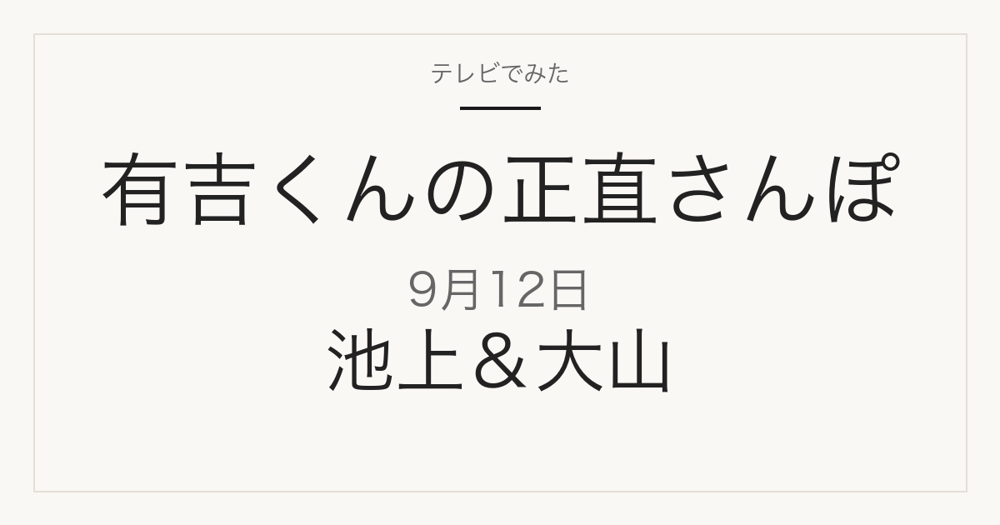

01
朝獲れ定食と幻の魚
「鮮度抜群！朝獲れ定食＆幻の魚」と案内されています。魚の名前は放送で明かされます。
テレビ紹介商品の記録メディア
この記事には広告・アフィリエイトリンクが含まれる場合があります。
2026年9月12日（土）放送
安くて美味しい名物グルメが揃う池上＆大山
これは放送前の記事です。番組表で確認できた内容だけを掲載しています。店名・住所・料理の価格・予約可否は、2026年9月11日時点の番組情報には記載がありません。放送後、番組公式や店舗公式で確認できたものからこのページに追記します。
紹介予定の内容を見る
特集概要
店名は未発表
この回のテーマは、池上＆大山のグルメです。番組表には「安くて美味しい名物グルメが揃う池上＆大山」とあり、散歩の舞台は東京都大田区の池上と板橋区の大山とみられます。紹介予定として次の5つが挙げられています。店名・住所・価格・予約可否はいずれも番組情報に記載がありません。
01
「鮮度抜群！朝獲れ定食＆幻の魚」と案内されています。魚の名前は放送で明かされます。
02
リゾットの専門店と、そこで出されるコースが取り上げられる予定です。
03
「地元で人気！町中華の絶品チャーハン」と案内されています。
04
グルメ以外に「レトロゲームに大興奮」という立ち寄り先が案内されています。
05
「相談して作るピッツァ！？」と案内されています。注文の仕方に特徴がありそうです。
上の内容は、2026年9月12日のフジテレビ番組表 12時枠（2026年9月11日確認）に記載されているものです。番組内容は変更になる場合があります。
舞台
街の一般的な説明です。番組がどの店を訪ねるかは放送で確認します。
9月12日の放送後、このページに次の情報が加わります。ブックマークしておけば、同じURLのまま最新の内容を見られます。
掲載するのは、番組公式か店舗の公式情報で確認できたものだけです。SNSの投稿だけを根拠にした断定はしません。
2026年9月12日 フジテレビ番組表（Gガイド）の12時枠
当サイトは番組公式サイトではありません。放送内容は変更になる場合があります。